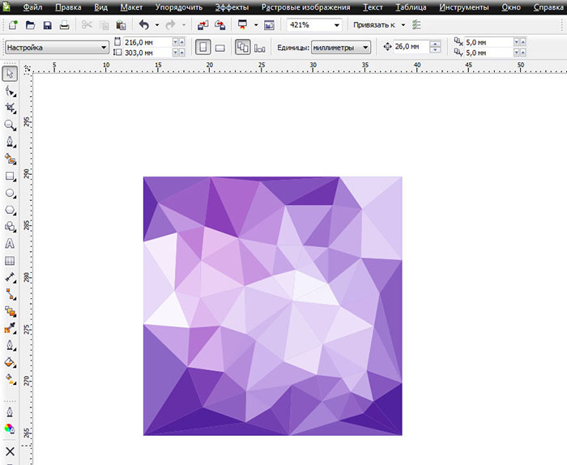

Радуга за 10 секунд (и не только...)
Рисуем окружность
Дублируем, копируем...
Интерактивное перетекание (6)
Пририсовываем прямоугольник и группируем с окружностями.
P.S. Группируем для того, чтоб в дальнейшем эти вспомогательные объекты беспрепятственно удалить.
Интеллектуальная заливка.
Можно воспользоваться палитрой при этом инструменте, но я использую один цвет. Так, по-моему, быстрее.
Удаляем вспомогательные элементы (окружности и прямоугольник).
Перекрашиваем сверху: Каждый Охотник Желает Знать Где Сидит Фазан.
С помощью Интеллектуальной заливки предлагаю нарисовать текстурку.
Рисуем прямоугольник. Делаем привязку к объектам.
Удобным для вас инструментом рисования, произвольно, неторопясь творим сеть кривых.
Главное доводить кривую до существующего узела или кривой.
Пририсовываем дополнительный элемент (для удобного последующего удаления) и всё группируем.
Интеллектуальная заливка.
Повторюсь: я заливаю всё одним цветом. Так быстрее.
Удаляем вспомогательные элементы. Раскрашиваем.

Удачи и творческих успехов!
")
По последнему кадру - раскрашивать так в ручную - долго. Если раскрашивать цветами быстро и хаотично, то результат плохой (визуально похоже не винигрет). В то время как на картинках явная закономерность - есть кучки более светлых элементов, есть кучки более темных. Вот сделать бы - сначала рисуешь фон с цветовыми пятнами типа такого потом накладываешь сверху векторную "мозаику", и экшн заливает каждый элемент мозаики цветом который преобладает в этом участке фона.
потом накладываешь сверху векторную "мозаику", и экшн заливает каждый элемент мозаики цветом который преобладает в этом участке фона.
хендмейд
Как вы это сделали? (Последние два комментария) Неужели вручную вырисовывали?